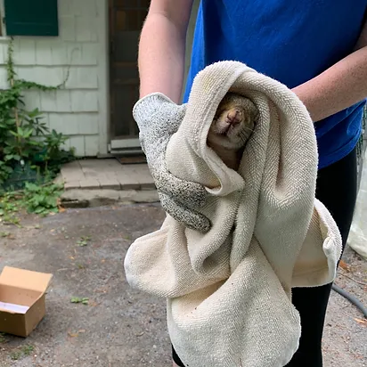

BEAST GUARD ALLIANCE is a one-of-a-kind platform started with the mission to crack down on animal cruelty using technology. Here at BEAST GUARD ALLIANCE, we let people respond to animal abuse immediately by providing a photo-sharing system where users can upload photos of any sick or injured animals they encounter. With our quick integration of such incidents to relevant resources through local NGOs and animal hospitals, we make sure every pet in pain gets proper attention.
We are not just interventionists; fostering a culture of compassion and accountability towards animals is also our goal. We encourage collective action against animal cruelty by giving out badge points for participation. These rewards recognize the hard work of our users and reinforce our community's commitment to animal right
At BEAST GUARD ALLIANCE, we believe in technology for good! We harness the power and reach of the internet to connect animals in need with compassionate individuals. Through our online community, we respond rapidly and in unison to reports of animal cruelty, increasing our effectiveness in saving lives while preventing further harm.
Transparency and accountability are key values at [Website Name]. We handle each case with the highest level of professionalism, ensuring every report is managed with confidentiality if requested. Through strategic partnerships with local NGOs and veterinary services, animals benefit from top-notch care and rehabilitation provided by dedicated professionals passionate about animal welfare

Help us at [Website Name] build a world where animals are treated with dignity, compassion, and respect. Together, we can make a lasting change for thousands of animals by empowering individuals to take real action against cruelty. Let's work toward a future where every animal receives the care and protection they deserve.
At BEAST GUARD ALLIANCE, we are redefining the way people engage in the fight against animal cruelty. By merging cutting-edge technology with grassroots activism, we’ve created a platform that not only responds to animal suffering but actively works to prevent it. Our innovative alert system allows users to report animal abuse with just a few clicks, instantly mobilizing a network of volunteers and professionals who can intervene swiftly. We believe that everyone has a role to play in protecting animals, and our platform makes it easier than ever for individuals to make a real difference in their communities. Whether through reporting incidents, volunteering time, or supporting our mission financially, every action taken on BEAST GUARD ALLIANCE contributes to a safer, more compassionate world for animals everywhere.